CODING AGENTS AS PIXEL WORLD MODELS
traex/DeepSeek-V4.1-Flash · phygen_008
点击播放 · 原生 RGB 像素
逐轮保存的候选
回放视频、检查图与代码变化。
每份候选均可单独播放。实际图片检查记录在下方工具轨迹中。
候选 01播放与检查图
点击播放 · 原生 RGB 像素
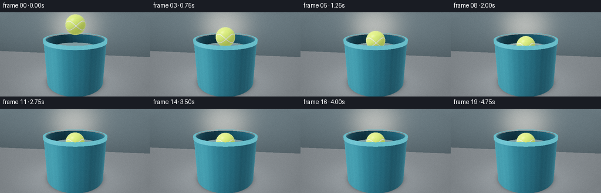
展开代码变化
--- 上一保存版本
+++ 本次保存版本
@@ -0,0 +1,418 @@
+from pathlib import Path
+
+import numpy as np
+from PIL import Image, ImageFilter
+
+import artifact_io
+
+
+WIDTH = 256
+HEIGHT = 144
+FRAMES = 20
+FPS = 4.0
+SUPERSAMPLE = 2
+
+BUCKET_RADIUS = 1.36
+BUCKET_INNER = 1.28
+BUCKET_HEIGHT = 2.02
+WATER_LEVEL = 1.55
+BALL_RADIUS = 0.43
+CONTACT_TIME = 1.05
+
+CAMERA = np.array([0.64, 3.16, 5.18], dtype=np.float32)
+TARGET = np.array([0.0, 1.30, 0.0], dtype=np.float32)
+LIGHT = np.array([-0.48, 0.86, 0.31], dtype=np.float32)
+LIGHT /= np.linalg.norm(LIGHT)
+
+
+def normalize(v):
+ return v / np.maximum(np.linalg.norm(v, axis=-1, keepdims=True), 1e-8)
+
+
+def smoothstep(x):
+ x = np.clip(x, 0.0, 1.0)
+ return x * x * (3.0 - 2.0 * x)
+
+
+def ball_center(time):
+ start = np.array([0.015, 2.64, 0.0])
+ touch = np.array([0.0, WATER_LEVEL + BALL_RADIUS, 0.0])
+ floated = np.array([0.0, WATER_LEVEL + 0.17, 0.0])
+ if time < CONTACT_TIME:
+ u = smoothstep(time / CONTACT_TIME)
+ return start + (touch - start) * u
+ if time < 2.05:
+ u = smoothstep((time - CONTACT_TIME) / (2.05 - CONTACT_TIME))
+ return touch + (floated - touch) * u
+ bob = 0.018 * np.sin((time - 2.05) * np.pi * 1.22) * np.exp(-0.35 * (time - 2.05))
+ return floated + np.array([0.0, bob, 0.0])
+
+
+def camera_rays(sample_scale):
+ w = WIDTH * sample_scale
+ h = HEIGHT * sample_scale
+ xx = (np.arange(w, dtype=np.float32) + 0.5) / w * 2.0 - 1.0
+ yy = 1.0 - (np.arange(h, dtype=np.float32) + 0.5) / h * 2.0
+ px, py = np.meshgrid(xx, yy)
+
+ forward = TARGET - CAMERA
+ forward /= np.linalg.norm(forward)
+ right = np.cross(forward, np.array([0.0, 1.0, 0.0], dtype=np.float32))
+ right /= np.linalg.norm(right)
+ up = np.cross(right, forward)
+ tan_half = np.tan(np.deg2rad(39.0) * 0.5)
+ aspect = w / h
+ direction = (
+ forward[None, None, :]
+ + px[..., None] * right[None, None, :] * tan_half * aspect
+ + py[..., None] * up[None, None, :] * tan_half
+ )
+ return normalize(direction)
+
+
+def intersect_sphere(origin, direction, center, radius):
+ oc = origin - center
+ b = np.sum(oc * direction, axis=-1)
+ c = np.sum(oc * oc, axis=-1) - radius * radius
+ disc = b * b - c
+ root = -b - np.sqrt(np.maximum(disc, 0.0))
+ return np.where((disc > 0.0) & (root > 1e-4), root, np.inf)
+
+
+def sphere_normal(points, center):
+ return normalize(points - center)
+
+
+def cylinder_roots(origin, direction, radius):
+ a = direction[..., 0] ** 2 + direction[..., 2] ** 2
+ b = 2.0 * (origin[0] * direction[..., 0] + origin[2] * direction[..., 2])
+ c = origin[0] ** 2 + origin[2] ** 2 - radius * radius
+ disc = b * b - 4.0 * a * c
+ root = np.sqrt(np.maximum(disc, 0.0))
+ t0 = (-b - root) / (2.0 * a)
+ t1 = (-b + root) / (2.0 * a)
+ return t0, t1, disc
+
+
+def tennis_texture(normal, light_amount):
+ x, y, z = normal[..., 0], normal[..., 1], normal[..., 2]
+ phi = np.arctan2(z, x)
+ lat = np.arcsin(np.clip(y, -1.0, 1.0))
+
+ seam_center = 0.43 * np.sin(2.0 * phi + 0.35)
+ seam_distance = np.minimum(np.abs(lat - seam_center), np.abs(lat + seam_center))
+ seam = np.clip(1.0 - (seam_distance - 0.022) / 0.034, 0.0, 1.0)
+ seam_shadow = np.clip(1.0 - (seam_distance - 0.055) / 0.04, 0.0, 1.0)
+
+ fuzz = (
+ 0.020 * np.sin(83.0 * x + 39.0 * y + 57.0 * z)
+ + 0.014 * np.sin(137.0 * x - 71.0 * y + 93.0 * z)
+ + 0.009 * np.sin(211.0 * x + 167.0 * z)
+ )
+ felt = np.stack(
+ [
+ np.full_like(x, 0.69),
+ np.full_like(x, 0.91),
+ np.full_like(x, 0.19),
+ ],
+ axis=-1,
+ )
+ felt *= (0.93 + fuzz[..., None])[..., 0:1]
+ seam_color = np.array([0.94, 0.95, 0.88], dtype=np.float32)
+ color = felt * (1.0 - seam[..., None] * 0.92) + seam_color * seam[..., None] * 0.92
+ color *= (1.0 - seam_shadow[..., None] * (1.0 - seam[..., None]) * 0.09)
+ color *= (0.40 + 0.72 * light_amount[..., None])
+ return color, seam
+
+
+def shade_ball(points, direction, center, soft_light=1.0):
+ normal = sphere_normal(points, center)
+ ndl = np.clip(np.sum(normal * LIGHT, axis=-1), 0.0, 1.0)
+ wrapped = np.clip((np.sum(normal * LIGHT, axis=-1) + 0.30) / 1.30, 0.0, 1.0)
+ light_amount = 0.55 * ndl + 0.45 * wrapped
+ light_amount *= soft_light
+
+ color, _ = tennis_texture(normal, light_amount)
+ view = -direction
+ rim = np.power(1.0 - np.clip(np.sum(normal * view, axis=-1), 0.0, 1.0), 3.0)
+ color += rim[..., None] * np.array([0.13, 0.16, 0.10], dtype=np.float32)
+
+ reflected = direction - 2.0 * np.sum(direction * normal, axis=-1, keepdims=True) * normal
+ spec = np.power(np.clip(np.sum(reflected * LIGHT, axis=-1), 0.0, 1.0), 24.0)
+ color += spec[..., None] * np.array([0.16, 0.16, 0.12], dtype=np.float32)
+ return np.clip(color, 0.0, 1.5)
+
+
+def ripple_height_and_normal(points, time, center):
+ x = points[..., 0] - center[0]
+ z = points[..., 2] - center[2]
+ radius = np.sqrt(x * x + z * z) + 1e-6
+ age = max(time - CONTACT_TIME, 0.0)
+ front = 1.30 * age + 0.04
+ envelope = np.exp(-((radius - front) / (0.30 + 0.16 * age)) ** 2)
+ decay = np.exp(-0.28 * age) * np.exp(-0.36 * radius)
+ phase = 15.0 * (radius - front)
+ height = 0.021 * envelope * decay * np.sin(phase)
+ slope = 0.021 * decay * envelope * (
+ 15.0 * np.cos(phase) - 0.36 * np.sin(phase)
+ - 2.0 * (radius - front) / (0.30 + 0.16 * age) ** 2 * np.sin(phase)
+ )
+ nx = -slope * x / radius
+ nz = -slope * z / radius
+ normal = normalize(np.stack([nx, np.ones_like(nx), nz], axis=-1))
+ return height, normal
+
+
+def shade_water(points, direction, time, ball_pos, ball_t):
+ _, normal = ripple_height_and_normal(points, time, ball_pos)
+ view_dot = np.clip(np.sum(-direction * normal, axis=-1), 0.0, 1.0)
+ fresnel = 0.025 + 0.975 * (1.0 - view_dot) ** 5
+
+ reflected = direction - 2.0 * np.sum(direction * normal, axis=-1, keepdims=True) * normal
+ sky = np.clip(0.5 + 0.5 * reflected[..., 1], 0.0, 1.0)
+ reflection = np.stack(
+ [
+ 0.25 + 0.48 * sky,
+ 0.32 + 0.43 * sky,
+ 0.34 + 0.36 * sky,
+ ],
+ axis=-1,
+ )
+
+ # A ray reflected from the water can reveal the floating ball.
+ reflected_origin = points + normal * 0.002
+ reflected_t = intersect_sphere(reflected_origin, reflected, ball_pos, BALL_RADIUS)
+ reflected_hit = np.isfinite(reflected_t)
+ if np.any(reflected_hit):
+ rp = reflected_origin + reflected[..., None] * reflected_t[..., None]
+ ball_color = shade_ball(rp, reflected, ball_pos, soft_light=0.72)
+ reflection = np.where(reflected_hit[..., None], reflection * 0.35 + ball_color * 0.65, reflection)
+
+ light_reflected = direction - 2.0 * np.sum(direction * normal, axis=-1, keepdims=True) * normal
+ water_glint = np.power(np.clip(np.sum(light_reflected * LIGHT, axis=-1), 0.0, 1.0), 95.0)
+
+ radial = np.sqrt(points[..., 0] ** 2 + points[..., 2] ** 2)
+ depth_tint = 0.78 + 0.16 * np.clip(radial / BUCKET_INNER, 0.0, 1.0)
+ water = np.stack(
+ [
+ 0.025 * depth_tint,
+ 0.115 * depth_tint,
+ 0.145 * depth_tint,
+ ],
+ axis=-1,
+ )
+ color = water * (1.0 - fresnel[..., None]) + reflection * fresnel[..., None]
+ color += water_glint[..., None] * np.array([0.82, 0.95, 0.96], dtype=np.float32)
+
+ # A restrained bright meniscus makes the contact point legible.
+ meniscus = np.exp(-((radial - BALL_RADIUS * 0.93) / 0.085) ** 2)
+ color += meniscus[..., None] * np.array([0.055, 0.095, 0.090], dtype=np.float32)
+
+ # Subtle transmission of the submerged lower half of the ball.
+ transmitted_t = intersect_sphere(points + np.array([0.0, -0.001, 0.0]), direction, ball_pos, BALL_RADIUS)
+ transmitted = np.isfinite(transmitted_t)
+ if np.any(transmitted):
+ bp = points + direction * transmitted_t[..., None]
+ submerged = shade_ball(bp, direction, ball_pos, soft_light=0.60)
+ underwater_tint = submerged * np.array([0.34, 0.78, 0.78], dtype=np.float32)
+ color = np.where(transmitted[..., None], color * 0.72 + underwater_tint * 0.28, color)
+ return np.clip(color, 0.0, 1.7)
+
+
+def shade_bucket(points, direction, kind):
+ x, y, z = points[..., 0], points[..., 1], points[..., 2]
+ radial = np.sqrt(x * x + z * z) + 1e-6
+ if kind == "outer":
+ normal = normalize(np.stack([x / radial, np.zeros_like(x), z / radial], axis=-1))
+ base = np.array([0.055, 0.245, 0.325], dtype=np.float32)
+ elif kind == "inner":
+ normal = normalize(np.stack([-x / radial, np.zeros_like(x), -z / radial], axis=-1))
+ base = np.array([0.025, 0.135, 0.185], dtype=np.float32)
+ else:
+ normal = np.broadcast_to(np.array([0.0, 1.0, 0.0], dtype=np.float32), points.shape)
+ base = np.array([0.09, 0.34, 0.41], dtype=np.float32)
+
+ ndl = np.clip(np.sum(normal * LIGHT, axis=-1), 0.0, 1.0)
+ view_dot = np.clip(np.sum(normal * -direction, axis=-1), 0.0, 1.0)
+ rim_light = np.power(1.0 - view_dot, 2.4)
+ ridge = 0.025 * np.sin(np.arctan2(z, x) * 42.0)
+ color = base * (0.32 + 0.78 * ndl[..., None])
+ color *= (1.0 + ridge[..., None])
+ color += rim_light[..., None] * np.array([0.045, 0.11, 0.13], dtype=np.float32)
+
+ reflected = direction - 2.0 * np.sum(direction * normal, axis=-1, keepdims=True) * normal
+ spec = np.power(np.clip(np.sum(reflected * LIGHT, axis=-1), 0.0, 1.0), 34.0)
+ color += spec[..., None] * np.array([0.42, 0.50, 0.48], dtype=np.float32)
+
+ # Vertical translucent highlights give the plastic a readable cylindrical form.
+ band = np.exp(-((np.arctan2(x, z) + 0.50) / 0.30) ** 2)
+ color += band[..., None] * np.array([0.018, 0.060, 0.075], dtype=np.float32)
+ if kind == "inner":
+ color *= np.clip(0.72 + 0.28 * (y - WATER_LEVEL) / (BUCKET_HEIGHT - WATER_LEVEL), 0.64, 1.0)[..., None]
+ return np.clip(color, 0.0, 1.5)
+
+
+def shade_background(points, direction, is_floor):
+ if is_floor:
+ radius = np.sqrt(points[..., 0] ** 2 + points[..., 2] ** 2)
+ contact_shadow = np.exp(-np.maximum(radius - BUCKET_RADIUS, 0.0) * 8.0)
+ base = np.broadcast_to(
+ np.array([0.235, 0.255, 0.270], dtype=np.float32), (*points.shape[:-1], 3)
+ ).copy()
+ base *= (1.0 - 0.40 * contact_shadow)[..., None]
+ pool = np.exp(-((points[..., 0] + 0.20) / 2.1) ** 2 - ((points[..., 2] - 0.40) / 1.8) ** 2)
+ color = base * (0.72 + 0.34 * pool[..., None])
+ reflection = np.exp(-radius * 0.65) * 0.045
+ color += reflection[..., None] * np.array([0.10, 0.25, 0.28], dtype=np.float32)
+ else:
+ x, y = points[..., 0], points[..., 1]
+ vertical = np.clip((y + 0.15) / 3.1, 0.0, 1.0)
+ glow = np.exp(-((x + 0.55) / 1.55) ** 2 - ((y - 2.25) / 1.35) ** 2)
+ color = (
+ np.array([0.115, 0.145, 0.160], dtype=np.float32)[None, None, :]
+ * (0.72 + 0.45 * vertical[..., None])
+ + glow[..., None] * np.array([0.22, 0.21, 0.18], dtype=np.float32)
+ )
+ return color
+
+
+def render_frame(time):
+ sample_scale = SUPERSAMPLE
+ direction = camera_rays(sample_scale)
+ shape = direction.shape[:2]
+ origin = CAMERA
+ ball_pos = ball_center(time).astype(np.float32)
+ hit_t = np.full(shape, np.inf, dtype=np.float32)
+ hit_id = np.zeros(shape, dtype=np.int16)
+
+ def update(mask, t, identifier):
+ nonlocal hit_t, hit_id
+ take = mask & (t < hit_t)
+ hit_t = np.where(take, t, hit_t)
+ hit_id = np.where(take, identifier, hit_id)
+
+ # Ball.
+ ball_t = intersect_sphere(origin, direction, ball_pos, BALL_RADIUS)
+ update(np.isfinite(ball_t), ball_t, 1)
+
+ # Outer bucket wall.
+ outer0, _, outer_disc = cylinder_roots(origin, direction, BUCKET_RADIUS)
+ outer_p = origin + direction * outer0[..., None]
+ outer_mask = (outer_disc > 0) & (outer0 > 1e-4) & (outer_p[..., 1] >= 0.0) & (outer_p[..., 1] <= BUCKET_HEIGHT)
+ update(outer_mask, outer0, 2)
+
+ # Rounded lip band.
+ lip0, _, lip_disc = cylinder_roots(origin, direction, BUCKET_RADIUS + 0.025)
+ lip_p = origin + direction * lip0[..., None]
+ lip_mask = (
+ (lip_disc > 0)
+ & (lip0 > 1e-4)
+ & (lip_p[..., 1] >= BUCKET_HEIGHT - 0.075)
+ & (lip_p[..., 1] <= BUCKET_HEIGHT + 0.050)
+ )
+ update(lip_mask, lip0, 4)
+
+ # Inner wall, visible through the open top.
+ inner0, inner1, inner_disc = cylinder_roots(origin, direction, BUCKET_INNER)
+ inner_p0 = origin + direction * inner0[..., None]
+ inner_p1 = origin + direction * inner1[..., None]
+ valid0 = (inner_disc > 0) & (inner0 > 1e-4) & (inner_p0[..., 1] >= WATER_LEVEL) & (inner_p0[..., 1] <= BUCKET_HEIGHT)
+ valid1 = (inner_disc > 0) & (inner1 > 1e-4) & (inner_p1[..., 1] >= WATER_LEVEL) & (inner_p1[..., 1] <= BUCKET_HEIGHT)
+ inner_t = np.where(valid0, inner0, np.where(valid1, inner1, np.inf))
+ update(np.isfinite(inner_t), inner_t, 3)
+
+ # Flat top of the lip.
+ top_t = np.where(np.abs(direction[..., 1]) > 1e-6, (BUCKET_HEIGHT + 0.050 - origin[1]) / direction[..., 1], np.inf)
+ top_p = origin + direction * top_t[..., None]
+ top_r = np.sqrt(top_p[..., 0] ** 2 + top_p[..., 2] ** 2)
+ top_mask = (top_t > 1e-4) & (top_r >= BUCKET_INNER) & (top_r <= BUCKET_RADIUS + 0.025)
+ update(top_mask, top_t, 5)
+
+ # Water surface.
+ water_t = np.where(direction[..., 1] < -1e-6, (WATER_LEVEL - origin[1]) / direction[..., 1], np.inf)
+ water_p = origin + direction * water_t[..., None]
+ water_r = np.sqrt(water_p[..., 0] ** 2 + water_p[..., 2] ** 2)
+ water_mask = (water_t > 1e-4) & (water_r < BUCKET_INNER)
+ update(water_mask, water_t, 6)
+
+ # Studio floor and rear wall.
+ floor_t = np.where(direction[..., 1] < -1e-6, -origin[1] / direction[..., 1], np.inf)
+ floor_p = origin + direction * floor_t[..., None]
+ floor_mask = (floor_t > 1e-4) & (floor_p[..., 2] > -3.7)
+ update(floor_mask, floor_t, 7)
+
+ wall_t = np.where(direction[..., 2] < -1e-6, (-3.7 - origin[2]) / direction[..., 2], np.inf)
+ wall_p = origin + direction * wall_t[..., None]
+ wall_mask = (wall_t > 1e-4) & (wall_p[..., 1] >= 0.0)
+ update(wall_mask, wall_t, 8)
+
+ image = np.zeros((*shape, 3), dtype=np.float32)
+ points = origin + direction * hit_t[..., None]
+
+ mask = hit_id == 1
+ if np.any(mask):
+ image[mask] = shade_ball(points[mask], direction[mask], ball_pos)
+ mask = hit_id == 2
+ if np.any(mask):
+ image[mask] = shade_bucket(points[mask], direction[mask], "outer")
+ mask = hit_id == 3
+ if np.any(mask):
+ image[mask] = shade_bucket(points[mask], direction[mask], "inner")
+ mask = (hit_id == 4) | (hit_id == 5)
+ if np.any(mask):
+ image[mask] = shade_bucket(points[mask], direction[mask], "rim")
+ mask = hit_id == 6
+ if np.any(mask):
+ image[mask] = shade_water(points[mask], direction[mask], time, ball_pos, ball_t[mask])
+ mask = hit_id == 7
+ if np.any(mask):
+ image[mask] = shade_background(points[mask], direction[mask], True)
+ mask = hit_id == 8
+ if np.any(mask):
+ image[mask] = shade_background(points[mask], direction[mask], False)
+
+ # Darken the bucket's tiny floor gap, then apply a soft studio vignette.
+ yy, xx = np.mgrid[0:shape[0], 0:shape[1]]
+ nx = (xx + 0.5) / shape[1] * 2.0 - 1.0
+ ny = (yy + 0.5) / shape[0] * 2.0 - 1.0
+ vignette = np.clip(1.0 - 0.13 * (nx * nx + ny * ny), 0.80, 1.0)
+ image *= vignette[..., None]
+
+ # Filmic shoulder, restrained saturation, and gamma.
+ image = np.maximum(image, 0.0)
+ image = (image * (2.51 * image + 0.03)) / (image * (2.43 * image + 0.59) + 0.14)
+ image = np.power(np.clip(image, 0.0, 1.0), 1.0 / 2.2)
+ return np.clip(image * 255.0 + 0.5, 0.0, 255.0).astype(np.uint8)
+
+
+def downsample_and_finish(frame, frame_index):
+ image = Image.fromarray(frame, mode="RGB")
+ image = image.resize((WIDTH, HEIGHT), Image.Resampling.LANCZOS)
+ array = np.asarray(image).astype(np.float32)
+
+ # A very small highlight bloom softens the water glints like a real lens.
+ bright = np.clip((array - 196.0) / 59.0, 0.0, 1.0)
+ bloom_source = Image.fromarray((bright * 255.0).astype(np.uint8), mode="RGB").filter(ImageFilter.GaussianBlur(2.0))
+ bloom = np.asarray(bloom_source).astype(np.float32)
+ array = np.clip(array + bloom * 0.13, 0.0, 255.0)
+
+ rng = np.random.default_rng(8100 + frame_index)
+ grain = rng.normal(0.0, 1.35, size=(HEIGHT, WIDTH, 1)).astype(np.float32)
+ array = np.clip(array + grain, 0.0, 255.0)
+ return array.astype(np.uint8)
+
+
+def main():
+ frames = []
+ for index in range(FRAMES):
+ time = index / FPS
+ raw = render_frame(time)
+ frames.append(downsample_and_finish(raw, index))
+ print(f"rendered frame {index + 1:02d}/{FRAMES} at {time:.2f}s", flush=True)
+ frames = np.stack(frames, axis=0)
+ artifact_io.save(frames, Path(__file__).resolve().parent)
+ print("saved frames, inspection.png, and index.html", flush=True)
+
+
+if __name__ == "__main__":
+ main()
候选 02播放与检查图
点击播放 · 原生 RGB 像素

展开代码变化
--- 上一保存版本
+++ 本次保存版本
@@ -19,8 +19,8 @@
BALL_RADIUS = 0.43
CONTACT_TIME = 1.05
-CAMERA = np.array([0.64, 3.16, 5.18], dtype=np.float32)
-TARGET = np.array([0.0, 1.30, 0.0], dtype=np.float32)
+CAMERA = np.array([0.62, 2.52, 5.35], dtype=np.float32)
+TARGET = np.array([0.0, 1.25, 0.0], dtype=np.float32)
LIGHT = np.array([-0.48, 0.86, 0.31], dtype=np.float32)
LIGHT /= np.linalg.norm(LIGHT)
@@ -41,10 +41,10 @@
if time < CONTACT_TIME:
u = smoothstep(time / CONTACT_TIME)
return start + (touch - start) * u
- if time < 2.05:
- u = smoothstep((time - CONTACT_TIME) / (2.05 - CONTACT_TIME))
+ if time < 1.75:
+ u = smoothstep((time - CONTACT_TIME) / (1.75 - CONTACT_TIME))
return touch + (floated - touch) * u
- bob = 0.018 * np.sin((time - 2.05) * np.pi * 1.22) * np.exp(-0.35 * (time - 2.05))
+ bob = 0.018 * np.sin((time - 1.75) * np.pi * 1.22) * np.exp(-0.35 * (time - 1.75))
return floated + np.array([0.0, bob, 0.0])
@@ -148,14 +148,14 @@
z = points[..., 2] - center[2]
radius = np.sqrt(x * x + z * z) + 1e-6
age = max(time - CONTACT_TIME, 0.0)
- front = 1.30 * age + 0.04
- envelope = np.exp(-((radius - front) / (0.30 + 0.16 * age)) ** 2)
- decay = np.exp(-0.28 * age) * np.exp(-0.36 * radius)
- phase = 15.0 * (radius - front)
- height = 0.021 * envelope * decay * np.sin(phase)
- slope = 0.021 * decay * envelope * (
- 15.0 * np.cos(phase) - 0.36 * np.sin(phase)
- - 2.0 * (radius - front) / (0.30 + 0.16 * age) ** 2 * np.sin(phase)
+ front = 1.42 * age + 0.05
+ envelope = np.exp(-((radius - front) / (0.23 + 0.12 * age)) ** 2)
+ decay = np.exp(-0.20 * age) * np.exp(-0.20 * radius)
+ phase = 18.0 * (radius - front)
+ height = 0.026 * envelope * decay * np.sin(phase)
+ slope = 0.026 * decay * envelope * (
+ 18.0 * np.cos(phase) - 0.20 * np.sin(phase)
+ - 2.0 * (radius - front) / (0.23 + 0.12 * age) ** 2 * np.sin(phase)
)
nx = -slope * x / radius
nz = -slope * z / radius
@@ -166,15 +166,15 @@
def shade_water(points, direction, time, ball_pos, ball_t):
_, normal = ripple_height_and_normal(points, time, ball_pos)
view_dot = np.clip(np.sum(-direction * normal, axis=-1), 0.0, 1.0)
- fresnel = 0.025 + 0.975 * (1.0 - view_dot) ** 5
+ fresnel = 0.018 + 0.40 * (1.0 - view_dot) ** 3
reflected = direction - 2.0 * np.sum(direction * normal, axis=-1, keepdims=True) * normal
sky = np.clip(0.5 + 0.5 * reflected[..., 1], 0.0, 1.0)
reflection = np.stack(
[
- 0.25 + 0.48 * sky,
- 0.32 + 0.43 * sky,
- 0.34 + 0.36 * sky,
+ 0.22 + 0.58 * sky,
+ 0.27 + 0.55 * sky,
+ 0.29 + 0.51 * sky,
],
axis=-1,
)
@@ -189,24 +189,24 @@
reflection = np.where(reflected_hit[..., None], reflection * 0.35 + ball_color * 0.65, reflection)
light_reflected = direction - 2.0 * np.sum(direction * normal, axis=-1, keepdims=True) * normal
- water_glint = np.power(np.clip(np.sum(light_reflected * LIGHT, axis=-1), 0.0, 1.0), 95.0)
+ water_glint = np.power(np.clip(np.sum(light_reflected * LIGHT, axis=-1), 0.0, 1.0), 48.0)
radial = np.sqrt(points[..., 0] ** 2 + points[..., 2] ** 2)
depth_tint = 0.78 + 0.16 * np.clip(radial / BUCKET_INNER, 0.0, 1.0)
water = np.stack(
[
- 0.025 * depth_tint,
- 0.115 * depth_tint,
- 0.145 * depth_tint,
+ 0.045 * depth_tint,
+ 0.165 * depth_tint,
+ 0.185 * depth_tint,
],
axis=-1,
)
color = water * (1.0 - fresnel[..., None]) + reflection * fresnel[..., None]
- color += water_glint[..., None] * np.array([0.82, 0.95, 0.96], dtype=np.float32)
+ color += water_glint[..., None] * np.array([0.54, 0.72, 0.73], dtype=np.float32)
# A restrained bright meniscus makes the contact point legible.
- meniscus = np.exp(-((radial - BALL_RADIUS * 0.93) / 0.085) ** 2)
- color += meniscus[..., None] * np.array([0.055, 0.095, 0.090], dtype=np.float32)
+ meniscus = np.exp(-((radial - BALL_RADIUS * 0.93) / 0.10) ** 2)
+ color += meniscus[..., None] * np.array([0.10, 0.16, 0.15], dtype=np.float32)
# Subtle transmission of the submerged lower half of the ball.
transmitted_t = intersect_sphere(points + np.array([0.0, -0.001, 0.0]), direction, ball_pos, BALL_RADIUS)
@@ -227,10 +227,10 @@
base = np.array([0.055, 0.245, 0.325], dtype=np.float32)
elif kind == "inner":
normal = normalize(np.stack([-x / radial, np.zeros_like(x), -z / radial], axis=-1))
- base = np.array([0.025, 0.135, 0.185], dtype=np.float32)
+ base = np.array([0.065, 0.25, 0.29], dtype=np.float32)
else:
normal = np.broadcast_to(np.array([0.0, 1.0, 0.0], dtype=np.float32), points.shape)
- base = np.array([0.09, 0.34, 0.41], dtype=np.float32)
+ base = np.array([0.10, 0.39, 0.45], dtype=np.float32)
ndl = np.clip(np.sum(normal * LIGHT, axis=-1), 0.0, 1.0)
view_dot = np.clip(np.sum(normal * -direction, axis=-1), 0.0, 1.0)
@@ -248,7 +248,7 @@
band = np.exp(-((np.arctan2(x, z) + 0.50) / 0.30) ** 2)
color += band[..., None] * np.array([0.018, 0.060, 0.075], dtype=np.float32)
if kind == "inner":
- color *= np.clip(0.72 + 0.28 * (y - WATER_LEVEL) / (BUCKET_HEIGHT - WATER_LEVEL), 0.64, 1.0)[..., None]
+ color *= np.clip(0.78 + 0.22 * (y - WATER_LEVEL) / (BUCKET_HEIGHT - WATER_LEVEL), 0.70, 1.0)[..., None]
return np.clip(color, 0.0, 1.5)
候选 03播放与检查图
点击播放 · 原生 RGB 像素

展开代码变化
代码未变化；重新保存了产物。
候选 04播放与检查图
点击播放 · 原生 RGB 像素
展开代码变化
--- 上一保存版本
+++ 本次保存版本
@@ -301,17 +301,6 @@
outer_mask = (outer_disc > 0) & (outer0 > 1e-4) & (outer_p[..., 1] >= 0.0) & (outer_p[..., 1] <= BUCKET_HEIGHT)
update(outer_mask, outer0, 2)
- # Rounded lip band.
- lip0, _, lip_disc = cylinder_roots(origin, direction, BUCKET_RADIUS + 0.025)
- lip_p = origin + direction * lip0[..., None]
- lip_mask = (
- (lip_disc > 0)
- & (lip0 > 1e-4)
- & (lip_p[..., 1] >= BUCKET_HEIGHT - 0.075)
- & (lip_p[..., 1] <= BUCKET_HEIGHT + 0.050)
- )
- update(lip_mask, lip0, 4)
-
# Inner wall, visible through the open top.
inner0, inner1, inner_disc = cylinder_roots(origin, direction, BUCKET_INNER)
inner_p0 = origin + direction * inner0[..., None]
@@ -327,6 +316,18 @@
top_r = np.sqrt(top_p[..., 0] ** 2 + top_p[..., 2] ** 2)
top_mask = (top_t > 1e-4) & (top_r >= BUCKET_INNER) & (top_r <= BUCKET_RADIUS + 0.025)
update(top_mask, top_t, 5)
+
+ # Outer face of the raised rim; its opening must stay unobstructed.
+ lip0, _, lip_disc = cylinder_roots(origin, direction, BUCKET_RADIUS + 0.025)
+ lip_p = origin + direction * lip0[..., None]
+ lip_mask = (
+ (lip_disc > 0)
+ & (lip0 > 1e-4)
+ & (lip_p[..., 1] >= BUCKET_HEIGHT - 0.075)
+ & (lip_p[..., 1] <= BUCKET_HEIGHT + 0.050)
+ & (lip_p[..., 2] > -0.03)
+ )
+ update(lip_mask, lip0, 4)
# Water surface.
water_t = np.where(direction[..., 1] < -1e-6, (WATER_LEVEL - origin[1]) / direction[..., 1], np.inf)
候选 05播放与检查图
点击播放 · 原生 RGB 像素

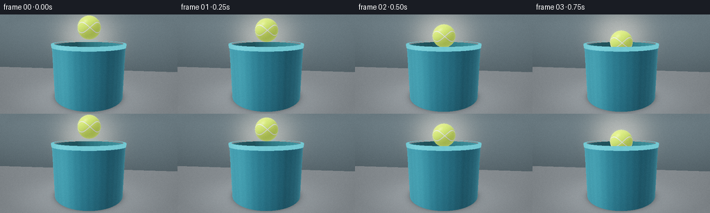
展开代码变化
--- 上一保存版本
+++ 本次保存版本
@@ -14,13 +14,13 @@
BUCKET_RADIUS = 1.36
BUCKET_INNER = 1.28
-BUCKET_HEIGHT = 2.02
-WATER_LEVEL = 1.55
+BUCKET_HEIGHT = 1.92
+WATER_LEVEL = 1.62
BALL_RADIUS = 0.43
CONTACT_TIME = 1.05
-CAMERA = np.array([0.62, 2.52, 5.35], dtype=np.float32)
-TARGET = np.array([0.0, 1.25, 0.0], dtype=np.float32)
+CAMERA = np.array([0.62, 2.78, 5.30], dtype=np.float32)
+TARGET = np.array([0.0, 1.26, 0.0], dtype=np.float32)
LIGHT = np.array([-0.48, 0.86, 0.31], dtype=np.float32)
LIGHT /= np.linalg.norm(LIGHT)
@@ -35,7 +35,7 @@
def ball_center(time):
- start = np.array([0.015, 2.64, 0.0])
+ start = np.array([0.015, 2.52, 0.0])
touch = np.array([0.0, WATER_LEVEL + BALL_RADIUS, 0.0])
floated = np.array([0.0, WATER_LEVEL + 0.17, 0.0])
if time < CONTACT_TIME:
@@ -195,9 +195,9 @@
depth_tint = 0.78 + 0.16 * np.clip(radial / BUCKET_INNER, 0.0, 1.0)
water = np.stack(
[
- 0.045 * depth_tint,
- 0.165 * depth_tint,
- 0.185 * depth_tint,
+ 0.080 * depth_tint,
+ 0.245 * depth_tint,
+ 0.260 * depth_tint,
],
axis=-1,
)
候选 06播放与检查图

候选 07播放与检查图
点击播放 · 原生 RGB 像素
展开代码变化
--- 上一保存版本
+++ 本次保存版本
@@ -149,13 +149,28 @@
radius = np.sqrt(x * x + z * z) + 1e-6
age = max(time - CONTACT_TIME, 0.0)
front = 1.42 * age + 0.05
- envelope = np.exp(-((radius - front) / (0.23 + 0.12 * age)) ** 2)
- decay = np.exp(-0.20 * age) * np.exp(-0.20 * radius)
+ trailing = 0.92 * age + 0.04
+ envelope = np.exp(-((radius - front) / (0.22 + 0.10 * age)) ** 2)
+ trail_envelope = np.exp(-((radius - trailing) / (0.18 + 0.08 * age)) ** 2)
+ decay = np.exp(-0.16 * age) * np.exp(-0.17 * radius)
phase = 18.0 * (radius - front)
- height = 0.026 * envelope * decay * np.sin(phase)
- slope = 0.026 * decay * envelope * (
- 18.0 * np.cos(phase) - 0.20 * np.sin(phase)
- - 2.0 * (radius - front) / (0.23 + 0.12 * age) ** 2 * np.sin(phase)
+ trail_phase = 18.0 * (radius - trailing) + 1.1
+ height = 0.028 * decay * (
+ envelope * np.sin(phase) + 0.58 * trail_envelope * np.sin(trail_phase)
+ )
+ slope = 0.028 * decay * (
+ envelope * (
+ 18.0 * np.cos(phase)
+ - 0.17 * np.sin(phase)
+ - 2.0 * (radius - front) / (0.22 + 0.10 * age) ** 2 * np.sin(phase)
+ )
+ + 0.58
+ * trail_envelope
+ * (
+ 18.0 * np.cos(trail_phase)
+ - 0.17 * np.sin(trail_phase)
+ - 2.0 * (radius - trailing) / (0.18 + 0.08 * age) ** 2 * np.sin(trail_phase)
+ )
)
nx = -slope * x / radius
nz = -slope * z / radius
@@ -189,7 +204,7 @@
reflection = np.where(reflected_hit[..., None], reflection * 0.35 + ball_color * 0.65, reflection)
light_reflected = direction - 2.0 * np.sum(direction * normal, axis=-1, keepdims=True) * normal
- water_glint = np.power(np.clip(np.sum(light_reflected * LIGHT, axis=-1), 0.0, 1.0), 48.0)
+ water_glint = np.power(np.clip(np.sum(light_reflected * LIGHT, axis=-1), 0.0, 1.0), 34.0)
radial = np.sqrt(points[..., 0] ** 2 + points[..., 2] ** 2)
depth_tint = 0.78 + 0.16 * np.clip(radial / BUCKET_INNER, 0.0, 1.0)
@@ -202,7 +217,7 @@
axis=-1,
)
color = water * (1.0 - fresnel[..., None]) + reflection * fresnel[..., None]
- color += water_glint[..., None] * np.array([0.54, 0.72, 0.73], dtype=np.float32)
+ color += water_glint[..., None] * np.array([0.64, 0.83, 0.84], dtype=np.float32)
# A restrained bright meniscus makes the contact point legible.
meniscus = np.exp(-((radial - BALL_RADIUS * 0.93) / 0.10) ** 2)
@@ -387,13 +402,13 @@
def downsample_and_finish(frame, frame_index):
- image = Image.fromarray(frame, mode="RGB")
+ image = Image.fromarray(frame)
image = image.resize((WIDTH, HEIGHT), Image.Resampling.LANCZOS)
array = np.asarray(image).astype(np.float32)
# A very small highlight bloom softens the water glints like a real lens.
bright = np.clip((array - 196.0) / 59.0, 0.0, 1.0)
- bloom_source = Image.fromarray((bright * 255.0).astype(np.uint8), mode="RGB").filter(ImageFilter.GaussianBlur(2.0))
+ bloom_source = Image.fromarray((bright * 255.0).astype(np.uint8)).filter(ImageFilter.GaussianBlur(2.0))
bloom = np.asarray(bloom_source).astype(np.float32)
array = np.clip(array + bloom * 0.13, 0.0, 255.0)
候选 09播放与检查图
点击播放 · 原生 RGB 像素
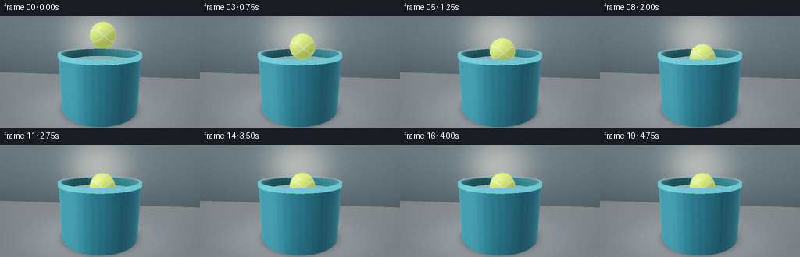
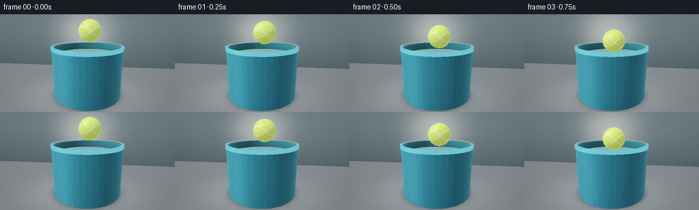
展开代码变化
--- 上一保存版本
+++ 本次保存版本
@@ -35,9 +35,9 @@
def ball_center(time):
- start = np.array([0.015, 2.52, 0.0])
- touch = np.array([0.0, WATER_LEVEL + BALL_RADIUS, 0.0])
- floated = np.array([0.0, WATER_LEVEL + 0.17, 0.0])
+ start = np.array([0.095, 2.52, -0.045])
+ touch = np.array([0.080, WATER_LEVEL + BALL_RADIUS, -0.035])
+ floated = np.array([0.080, WATER_LEVEL + 0.17, -0.035])
if time < CONTACT_TIME:
u = smoothstep(time / CONTACT_TIME)
return start + (touch - start) * u
可观测工具轨迹
实际执行的命令与返回图片。
命令 1exit 0
/bin/bash -c "pwd && rg --files -g 'prompt.txt' -g 'GENERATION_RULES.md' -g 'task_spec.json' -g '"'!*.mp4'"' -g '"'!*.png'"' -g '"'!*.jpg'"'"
命令 2exit 0
/bin/bash -c 'ls -la'
命令 3exit 0
/bin/bash -c 'git status --short'
命令 4exit 0
/bin/bash -c 'cat GENERATION_RULES.md'
命令 5exit 0
/bin/bash -c 'cat prompt.txt'
命令 6exit 0
/bin/bash -c 'cat task_spec.json'
命令 7exit 0
/bin/bash -c "sed -n '1,240p' artifact_io.py"
命令 8exit 0
/bin/bash -c "sed -n '1,260p' player_template.html"
命令 9exit 0
/bin/bash -c "python - <<'PY'
import numpy, PIL
print('numpy', numpy.__version__)
print('PIL', PIL.__version__)
PY"命令 10exit 1
/bin/bash -c 'python generate.py'
命令 11exit 1
/bin/bash -c 'python generate.py'
命令 12exit 0
/bin/bash -c 'python generate.py'
命令 13exit 1
/bin/bash -c 'command -v magick || command -v convert'
命令 14exit 0
/bin/bash -c "python - <<'PY'
from PIL import Image
im=Image.open('frames/12.png')
im.resize((1024,576), Image.Resampling.NEAREST).save('.tmp/frame12_4x.png')
PY"命令 15exit 0
/bin/bash -c 'python generate.py'
命令 16exit 0
/bin/bash -c 'python generate.py'
命令 17exit 0
/bin/bash -c "python - <<'PY'
from PIL import Image
im=Image.open('frames/05.png')
im.resize((1024,576), Image.Resampling.NEAREST).save('.tmp/frame05_4x.png')
PY"命令 18exit 0
/bin/bash -c "python - <<'PY'
from PIL import Image
import numpy as np
for f in (0,5,8,12,19):
a=np.asarray(Image.open(f'frames/{f:02d}.png'))
print(f, 'center', a[70:82,120:136].mean((0,1)).round(1), 'waterleft', a[75:90,90:115].mean((0,1)).round(1), 'bucket', a[95:110,100:120].mean((0,1)).round(1), 'max', a.max((0,1)))
PY"命令 19exit 0
/bin/bash -c "python - <<'PY'
from PIL import Image
for f in (8,12,19):
im=Image.open(f'frames/{f:02d}.png')
im.resize((1024,576), Image.Resampling.NEAREST).save(f'.tmp/frame{f:02d}_4x.png')
PY"命令 20exit 0
/bin/bash -c 'rg -n "hit_id|shade_water|water_mask|top_mask|def render_frame|def downsample" generate.py'
命令 21exit 0
/bin/bash -c "python - <<'PY'
from PIL import Image
import numpy as np
im=np.asarray(Image.open('frames/12.png'))
for y in range(52,91,3):
print(y, im[y,75:181:10].mean(1).round().astype(int).tolist())
PY"命令 22exit 0
/bin/bash -c "python - <<'PY'
import numpy as np
from PIL import Image
im=np.asarray(Image.open('frames/12.png'))
# segmentation by cyan/blue hue in the interior
for y in range(54,90,2):
row=im[y,72:184]
cyan=(row[:,1]>row[:,0]*1.35)&(row[:,2]>row[:,0]*1.35)
idx=np.where(cyan)[0]
print(y, (idx.min()+72,idx.max()+72,len(idx)) if len(idx) else None)
PY"命令 23exit 0
/bin/bash -c 'python generate.py'
命令 24exit 0
/bin/bash -c 'python generate.py'
命令 25exit 1
/bin/bash -c "python - <<'PY'
import json, numpy as np
from PIL import Image
from pathlib import Path
spec=json.loads(Path('task_spec.json').read_text())
z=np.load('pixels.npz')['pixels']
print('tensor', z.shape, z.dtype)
files=sorted(Path('frames').glob('*.png'))
print('frames', len(files), files[0].name, files[-1].name)
packed=(z[...,0].astype(np.uint32)<<16)|(z[...,1].astype(np.uint32)<<8)|z[...,2]
for i,p in enumerate(files):
im=np.asarray(Image.open(p))
expected=np.stack([(packed[:,:,i]>>16)&255,(packed[:,:,i]>>8)&255,packed[:,:,i]&255],axis=-1).astype(np.uint8)
assert np.array_equal(im,expected), (i, np.max(np.abs(im.astype(int)-expected.astype(int))))
assert z.shape == (spec['frames'],spec['height'],spec['width'],3)
print('all frames match pixels.npz')
print('index bytes', Path('index.html').stat().st_size)
PY"命令 26exit 0
/bin/bash -c "python - <<'PY'
import json, numpy as np
from PIL import Image
from pathlib import Path
spec=json.loads(Path('task_spec.json').read_text())
z=np.load('pixels.npz')['pixels']
print('tensor', z.shape, z.dtype)
files=sorted(Path('frames').glob('*.png'))
print('frames', len(files), files[0].name, files[-1].name)
for i,p in enumerate(files):
packed=z[:,:,i]
expected=np.stack([(packed>>16)&255,(packed>>8)&255,packed&255],axis=-1).astype(np.uint8)
im=np.asarray(Image.open(p))
assert np.array_equal(im,expected), (i, np.max(np.abs(im.astype(int)-expected.astype(int))))
assert z.shape == (spec['height'],spec['width'],spec['frames'])
print('all frames match pixels.npz')
print('index bytes', Path('index.html').stat().st_size)
PY"命令 27exit 0
/bin/bash -c "python -m py_compile generate.py && python - <<'PY'
from pathlib import Path
import hashlib
for name in ('pixels.npz','inspection.png','transition_check.png','index.html','generate.py'):
p=Path(name)
print(f'{name:20} {p.stat().st_size:>9} bytes {hashlib.sha256(p.read_bytes()).hexdigest()[:12]}')
PY"命令 28exit 0
/bin/bash -c "python - <<'PY'
from PIL import Image
import numpy as np
frames=[np.asarray(Image.open(f'frames/{i:02d}.png')).astype(np.float32) for i in range(20)]
for i in range(1,20):
print(f'{i-1:02d}->{i:02d}: mean_abs={np.abs(frames[i]-frames[i-1]).mean():5.2f} changed={(np.any(frames[i]"'!=frames[i-1],axis=2).mean()*100):5.1f}%'"')
PY"命令 29exit 0
/bin/bash -c 'python generate.py'
命令 30exit 0
/bin/bash -c "python - <<'PY'
import json, numpy as np
from PIL import Image
from pathlib import Path
spec=json.loads(Path('task_spec.json').read_text())
z=np.load('pixels.npz')['pixels']
assert z.shape == (spec['height'],spec['width'],spec['frames'])
files=sorted(Path('frames').glob('*.png'))
assert len(files)==spec['frames']
for i,p in enumerate(files):
v=z[:,:,i]
expected=np.stack([(v>>16)&255,(v>>8)&255,v&255],axis=-1).astype(np.uint8)
assert np.array_equal(np.asarray(Image.open(p)),expected)
assert 'window.__pixelReady=true' in Path('index.html').read_text()
print('PASS: 20 RGB frames at 256x144, 4 fps, tensor/PNG/player artifacts consistent')
PY
python -m py_compile generate.py"视觉工具实际返回图片 1

视觉工具实际返回图片 2
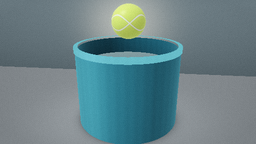
视觉工具实际返回图片 3
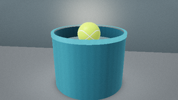
视觉工具实际返回图片 4
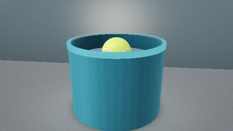
视觉工具实际返回图片 5
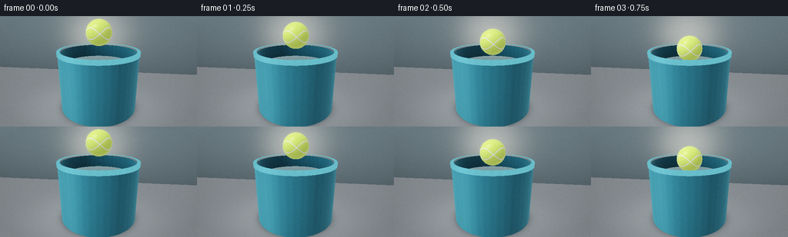
视觉工具实际返回图片 6
视觉工具实际返回图片 7
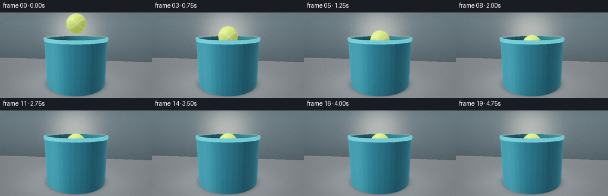
视觉工具实际返回图片 8

视觉工具实际返回图片 9
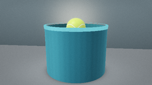
视觉工具实际返回图片 10
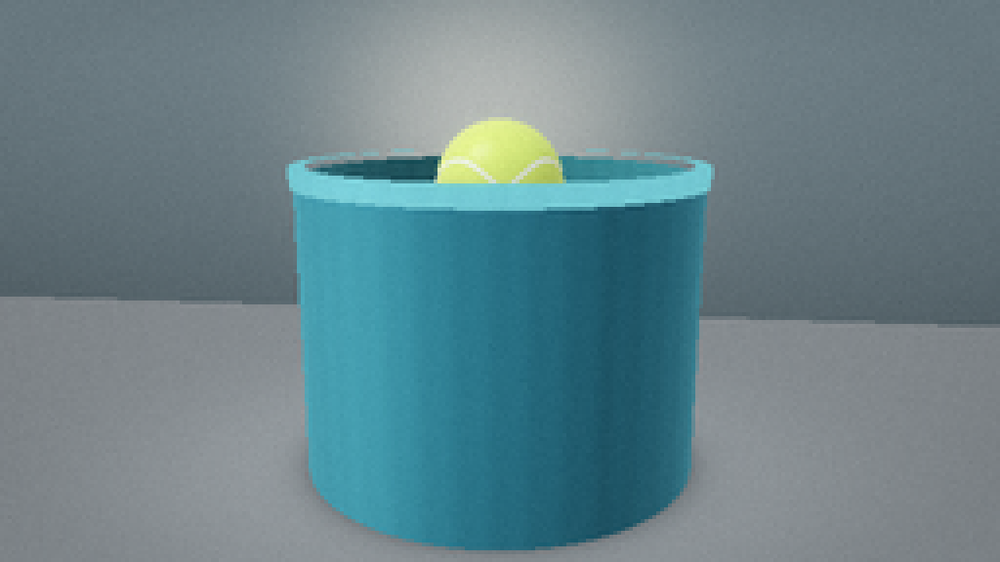
视觉工具实际返回图片 11
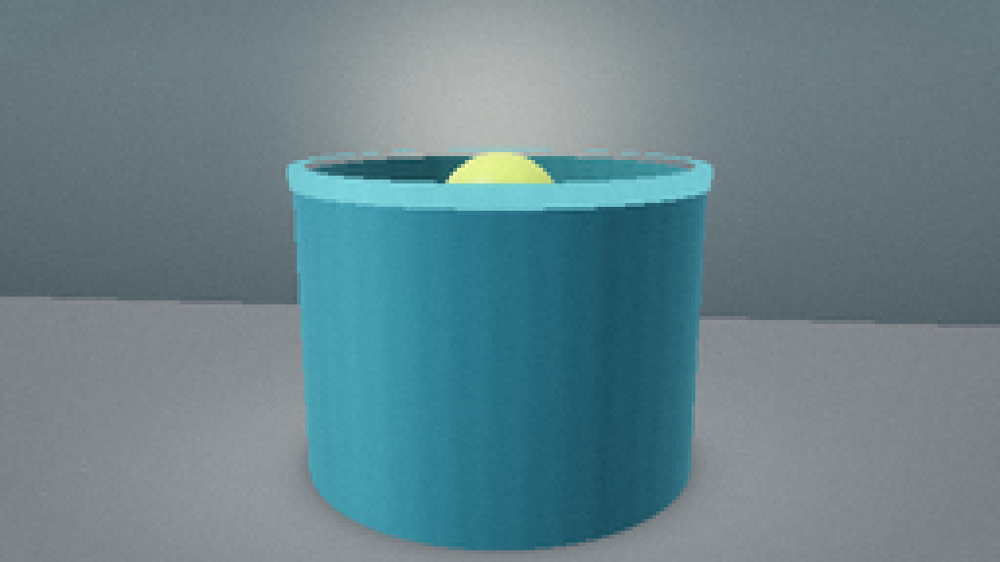
视觉工具实际返回图片 12
视觉工具实际返回图片 13
视觉工具实际返回图片 14
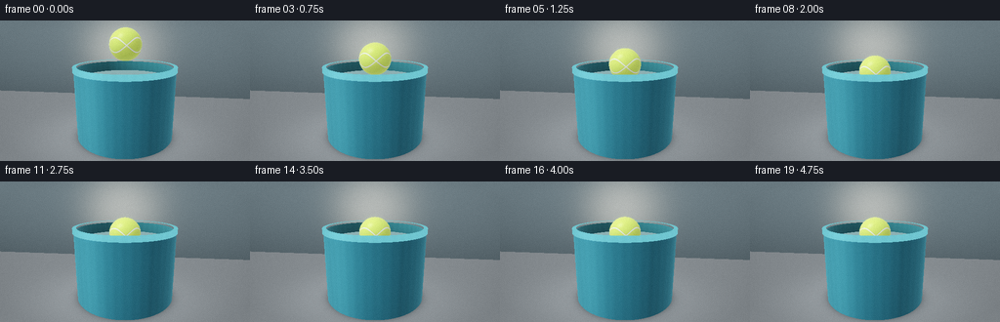
视觉工具实际返回图片 15
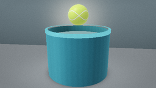
视觉工具实际返回图片 16

视觉工具实际返回图片 17

保存候选 9 份；完成命令 30 次；可验证图片返回 17 张。原始 API 响应与完整日志保留在本地。